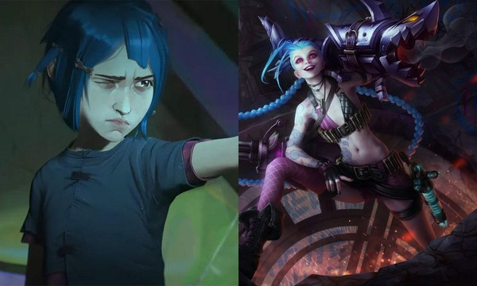
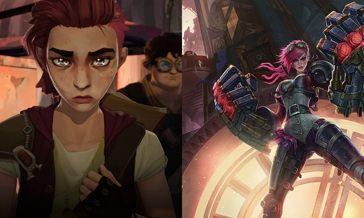
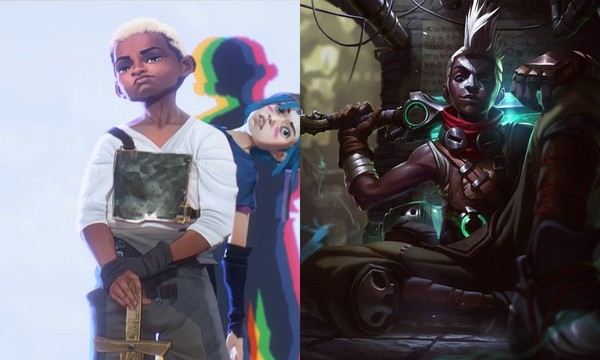
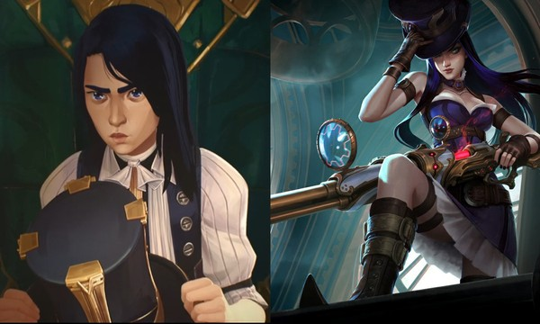
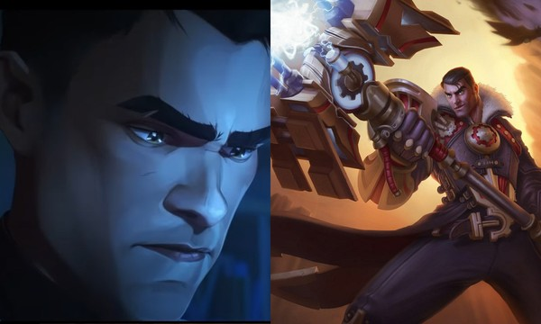
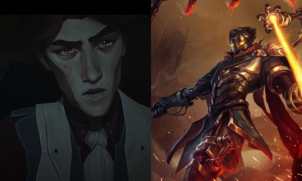
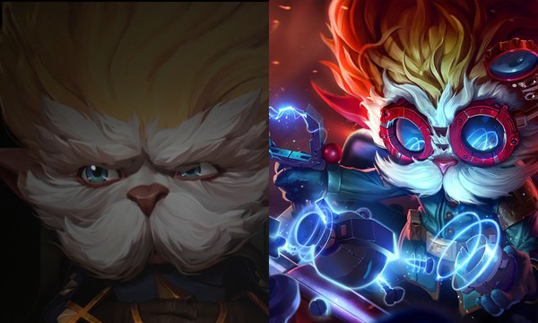
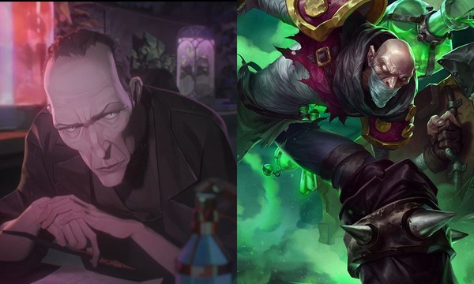
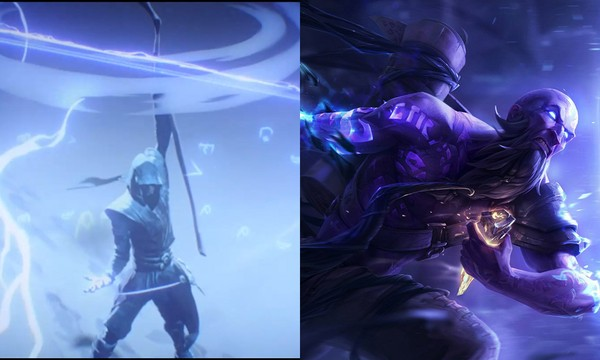
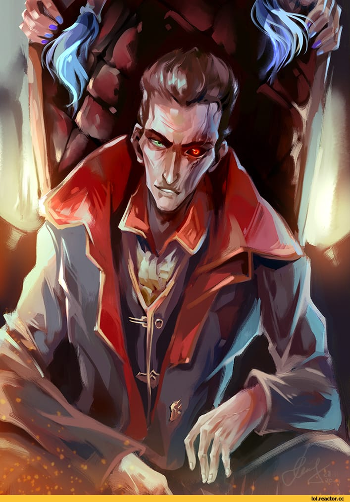

-
Jinx
- Atiradora
Jinx é uma das principais personagens de Arcane e também uma das mais populares campeãs no League of Legends. O primeiro ato da série explora sua infância e sua relação com a irmã e amigos no distrito de Zaun. Vale destacar que na animação ela é chamada Powder, seu nome verdadeiro, e é mostrada sua história antes de se tornar aquela atiradora que atormenta a todos em Summoner's Rift.
-
Vi
- Lutadora
A irmã mais velha de Jinx também desempenha um papel de protagonista na série. Os espectadores conhecem mais a respeito dos anos de adolescente de Vi e sua evolução como pessoa e também como lutadora. O principal ponto nesses episódios é a relação de Vi com Powder (Jinx) e todos os eventos que acabam se desencadeando por conta disso.
-
Ekko
- Estilador do Tempo
Em Arcane, os espectadores terão uma melhor ideia a respeito da infância de Ekko e suas principais relações com outros campeões do LOL, embora tudo seja abordado de forma razoavelmente rápida. O primeiro ato procura dar alguns detalhes do potencial e da inteligência do personagem nas mais diferentes situações em Zaun, bem antes de se tornar o rapaz que estilhaçou o tempo.
-
Caitlyn
- Atiradora
Uma das escolhas favoritas entre os atiradores no LOL, Caitlyn também faz sua aparição em Arcane. Assim como os demais personagens, o primeiro ato mostra um pouco mais a vida de Cailtyn quando adolescente e pequenas referências a respeito de seu futuro como Xerife de Piltover. A série também dá mais detalhes sobre sua família e como é sua postura frente aos acontecimentos na cidade.
-
Jayce
- Inteligência
Mesmo sem estar entre os campeões mais populares do LOL, Jayce realiza um papel muito importante em Arcane. Os primeiros episódios dão uma ideia melhor a respeito da inteligência de Jayce e de toda sua colaboração com tipos específicos de itens que estão presentes no LOL há muito tempo. Sua relação com outros campeões que aparecem ao redor também é um detalhe que agrega ainda mais ao personagem.
-
Charizard
- Experiencia Cientifica
Viktor é um dos campeões mais difíceis de se identificar em Arcane em um primeiro momento. No League of Legends, ele é apresentado com um corpo de aço e habilidades criadas pela ciência. No primeiro ato da série da Netflix, o campeão aparece sem essa armadura e atuando como assistente de outro personagem importante no enredo. Nesses episódios, Viktor se encontra em um momento em que ele está começando a dar passos maiores em suas experiências científicas.
-
Heimerdinger
- Inventor Idolatrado
O yordle Heimerdinger se apresenta em Arcane como um nome bastante respeitado em Piltover. Não é para menos que ele é conhecido como o "Inventor Idolatrado" no League of Legends. Mesmo ele estando entre os campeões menos populares do LOL, a série valoriza bem suas qualidades e explora bastante sua personalidade, mostrando ele lida com os problemas que aparecem ao seu redor.
-
Singed
- Quimico Louco
Singed conta com pouco tempo de tela durante Arcane. O químico louco possui um papel um pouco mais secundário, sendo apenas uma espécie de assistente pessoal do vilão principal do ato. Apesar de não ser tão explorado, é possível ter uma ideia melhor a respeito de quem era o Singed anos mais jovem. Vale ressaltar que seu nome não é citado nos diálogos e que a confirmação de que ele está em Arcane se encontra nos créditos ao final dos episódios.
-
Ryze
- Explicações e Respeito
Assim como o Singed, Ryze não conta com um tempo tão grande de tela. Na verdade, é um tempo muito menor. Para piorar, não fica claro, pelo menos em um primeiro momento, que ele realmente está presente em Arcane. Quando surge em um flashback, o personagem é uma das peças para levar explicações a respeito de um dos principais eventos que ocorrem durante o ato inicial. Ryze é um dos primeiros campeões a ser lançado no LOL e não se sabe se sua história será explorada mais a fundo nos próximos atos.
-
Silco
- Traficante
Silco era um traficante e industrial zaunita, e pai adotivo de Jinx. Um indivíduo tirânico e brutal, ele era um defensor radical da independência de Zaun de Piltover e estava disposto a fazer qualquer coisa para alcançá-lo.